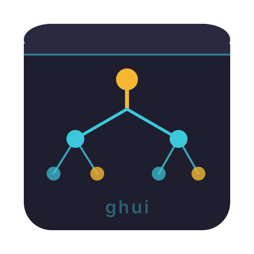
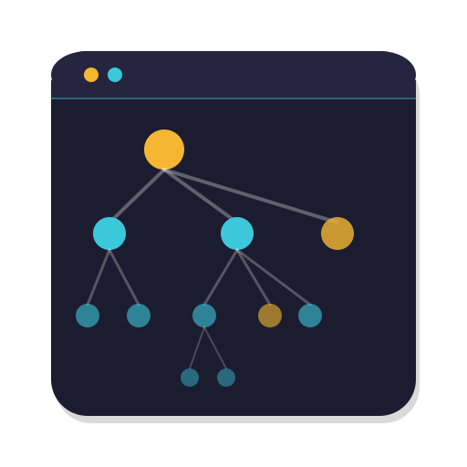
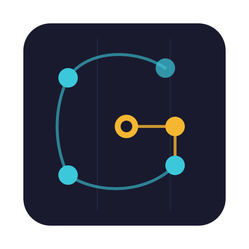

Two proposals with multiple variants each. Colors: Cyan ■ #3CC8DB & Golden ■ #F5B731
An application window frame containing a tree/hierarchy structure. Directly communicates "a UI for managing hierarchical items" — which is exactly what ghui does. The window frame provides strong structure at all sizes.
Full window frame with title bar dots, cyan border, and a symmetric tree with golden root node.
Darker fill, accent stripe, balanced binary tree. Subtle "ghui" watermark at bottom.

200pxNo window chrome — clean rounded square with ring-style (hollow) parent nodes and solid leaf nodes. Strong icon presence.
Window chrome with a realistic, non-symmetric tree. Multiple depth levels. Feels like an actual project structure.

200pxGitHub + Kanban Board concept. Connected nodes/dots are arranged to suggest both a graph network and the letter "G" (for GitHub). The golden accent highlights the center/bar of the G shape.
Subtle vertical grid lines suggest kanban columns. Curved path forms a G with connected nodes.

200pxLiteral kanban board with card rectangles in the top half. Connected nodes form a G in the bottom half.
Circular background with a thick-stroke G made of graph edges and prominent nodes. Most icon-like.
Minimal rounded square with a clean G-shaped graph. Smooth curves, clear hierarchy of node sizes.
How each variant reads at the smallest practical size:
Checking readability against a light surface: